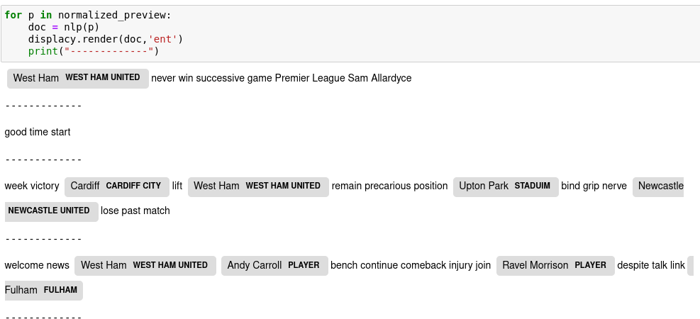
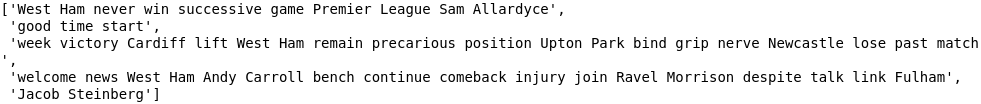
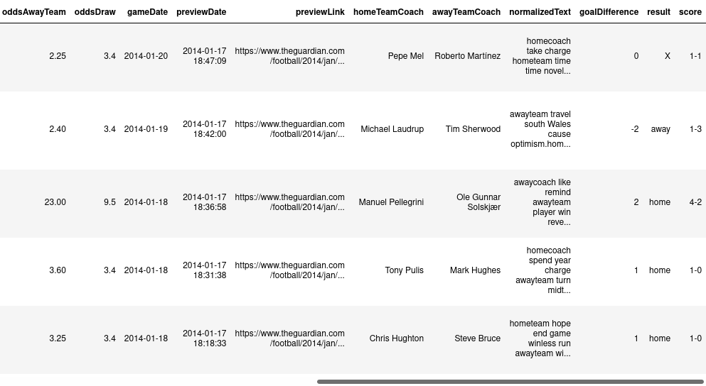

A multi-task learning approach to predict the outcome of a football game using human experts input
Contents
A multi-task learning approach to predict the outcome of a football game using human experts input¶
In this work, we propose to exploit a new type of data to capture the game environment. We will extend the methodology described in and build a multi-head multi task deep learning network able to digest both Text data provided by human football experts and more standard time series tabular data. The results will be compared to traditional and machine learning approaches described in the literature.
Literature review¶
Data analytics has been adopted by most industries, including football. However, the availability of football match data has increased in recent years, allowing anyone involved in football to gain hidden knowledge and predict outcomes.
In our literature review, we will concentrate on models that predict the outcomes of football matches based on various baselines. These baselines are statistical and machine learning approaches that rely on statistical machine learning based on historical data about individual teams.
Statistical approaches¶
The very first generation of football-related models focused on the distribution of the number of goals scored during a football game.
Starting by (Maher, 1982) included a general model that uses an independent poisson distribution to approximate a team’s scoring frequency. However, this model assumes that each team’s home, away, attack, and defense parameters are constant.
(Dixon & Coles, 1997) claimed in their paper that the previous model has certain limitations, such as low score results (0-0, 1-0, 0-1, and 1-1) being inherently unreported and each team’s scoring and defending abilities being regarded as constant over time.
They proposed a new model with some specific enhancements. This model is a bivariate poisson distribution with parameters based on past performance for the number of goals scored by each team. This implies that recent matches have a greater impact on strength estimates.
Unlike previous models that used a Poisson distribution, (Boshnakov et al., 2017) proposed a new approach that uses an independent and identically distributed Weibull distribution for the number of goals scored by the home and away teams in a match. Furthermore, they allowed for dependence between the goals scored by the two teams by using a copula to generate a bivariate distribution with positive or negative dependence.
They compared this bivariate Weibull model to the others and discovered that it provides a good fit to English Premier League data from 2006/2007 to 2015/2016 seasons and achieves positive betting returns.
Bookmakers predictions¶
Making bets on the outcome of football matches has a long history around the world, and typically entails selecting matches that are thought to be the most likely to end in a draw.
Bookmakers provide odds on a match’s various outcomes and the simplest version of this relies exclusively on the results which can be a win by either the team playing at home or the team playing away, or a draw. More complex bets on the score or the half-time and full-time results are also available.
Football match predictions is a very complex problem in which the outcome of the game is predicted based on the teams’ previous performance and the relative abilities of the players in the teams. This implies that the team with the best players should win.
Bookmakers set their odds based on this challenge and employ sophisticated pricing models that assign “odds” to different outcomes in order to maximize their chances of profit.
According to (Beal et al., 2019), bookmakers’ accuracy was around 67% for American football, 74% for basketball, 64% for cricket, 61% for baseball, and only 54% for football during the 2017/2018 season. This is due to the fact that the frequency of goals is far lower than the frequency of points scored in the other sports.
Machine Learning approaches¶
To date, probabilistic methods have yielded limited results and appear to have reached a plateau in terms of accuracy because team performance is dependent not only on team abilities but also on a variety of dynamic factors such as team configurations, player health, match location, weather, team strategies, and other external factors.
As a result predicting football match outcomes becomes a very complex computational problem.
Among the machine learning methods interested in football match predictions, we highlight sentimental analysis of social media platforms. These studies focus on opinion aggregation and underscore the importance of hidden information contained in the sentiment of fans publications.
True, fans tweets are unlikely to influence game outcomes, unless they are used to exceptionally motivate or demotivate a team. For example, supporters use social media platforms like Twitter to express their personal feelings, primarily about the team they are following and their next opponent’s strengths, weaknesses, and prospects, and this can sometimes help establish betting odds.
This method is used by (Schumaker et al., 2016) to predict English Premier League matches by analyzing fans tweets during the final three months of the 2013–2014 from February 16 through May 11 2014. It achieved an accuracy of 50%,this system has only two possible outcomes: home team win or away team win. If the model’s number of Home or Away tweets was zero, the match was not considered for that model. However, it was discovered that sentiment was unable to recognize a draw outcome, so this category was dropped.
As well as that, (Baboota & Kaur, 2019) investigates the application of machine learning techniques to predict football match outcomes and compares the results to bookmakers. They employ feature engineering and exploratory data analysis to identify the feature set that contains the most important factors for predicting match outcome. The authors put Gaussian naive Bayes, SVM, Random forest, and Gradient boosting to the test. They used training data from 2005 to 2014 in the EPL (English Premier League) and discovered that the Gradient boosting method performed the best with an accuracy of 56.7 %
Moreover, to address weaknesses described above, recently, a new technique has emerged (Beal et al., 2020) that incorporates human expertise and judgment, such as media information, rather than just basic performance statistics, which has helped improve prediction accuracy.
These new baselines used a dataset of 6 seasons of English Premier League games from 2013/14 to 2018/19, including football match data, the Guardian previews and predictions from bookmakers odds for 1770 games, employing both statistical machine learning techniques and Natural Language Processing.
When NLP methods, statistical approaches, and bookmakers predictions were compared to the ensemble learning approach which combines the first three techniques and uses a Random forest classifier, the results revealed that these methods could be improved.
It achieved an accuracy of 63.2 %, a 10.8 % increase over the bookmakers’ accuracy(52.43%), 4.1 % more than (Dixon & Coles, 1997) (59.11%) and a 13 % improvement over the sentiment analysis approach in (Schumaker et al., 2016).
Experiments revealed that using the ensemble model increases the likelihood of predicting draws and longshot results. This is especially true when the text vectors model identifies more longshots (38.9 %) by taking into account human input, whereas the first three models are typically poor at predicting these events.
Our contribution¶
In most machine learning situations, we are only concerned with one problem at a time. Whatever the task, the problem is typically outlined as using data to solve or optimize a single metric at a time. However, this approach will eventually reach a performance limit, which is often due to the size of the dataset or the model’s ability to derive meaningful representations from it.
On the other hand, multitasking learning is a machine learning approach in which we attempt to learn multiple tasks at the same time while optimizing multiple loss functions.Instead of training separate models for each task, we expect a single model to learn how to perform all tasks simultaneously.
The model uses all of the data available in the various tasks to learn generalized representations of the data that are useful in multiple contexts during this process.
Our contribution to this project is to extend the methodology described in (Beal et al., 2020) which consists of developing a model that ensembles three separate models trained separately and to build a multi-head, multi-task deep learning network (Vafaeikia et al., 2020) capable of capturing the game environment as well as more standard time series tabular data. This dataset includes, until now, 3880 English Premier League match previews from 2009 to the present.
The findings will be compared to traditional and machine learning approaches described in the literature, and the following question will be addressed:
Do football experts’ human analysis influence the predictions of football matches?
References¶
The Guardian Scraper¶
Scraping Premier League Previews from the Guardian.
To reach the aim of our project, we have begun the first task, which is to collect football experts’ comments and data from English Premier League matches.
For this task, we will use match previews from “The Guardian.” It goes back far enough, from 2009 to today, to allow us to integrate deep neural networks.
Indeed, “The Guardian’s” football experts publish previews every week, usually two or three days before the matches.
In this regard, we began by creating a data extraction tool that will allow us to extract this information on a regular basis.
The information to be extracted is as follows:
The names of the competing teams.
The date of the game
The identity of the referee
The stadium’s name
Sports odds that will be converted to decimal format
The football expert’s text
The text’s author.
A preliminary examination of the Guardian’s website¶
Issues |
Solutions |
|---|---|
4 possible formats for previews(old format, new format,Cup’s format and a particular format) |
Select the appropriate html tags |
Preview titles are not the same ( we can find Squad Sheets or match preview) |
Pick only the names of the teams and eliminate the rest |
The date of the match is not always available |
Pick the preview date |
The order of the elements and labels are not the same |
Using regex patterns to get information |
Missing values for betting odds |
We treat the general case separately and we set up specific regex patterns for these particular cases |
Odds format is different |
We treat the general case separately and we set up specific regex patterns for these particular cases |
We can find non-numeric values for Odds like (Evens,evens,Eve,odds-on) |
Replace evens by 1-1 |
There are some previews that don’t have author and text |
For previews that have no text, we put None (not available) |
The existence of previews for the FA CUP,Carabao Cup,Champions league,World Cup |
Filter previews by checking if the match exists in “Opta” database, and pick only Premier League match |
We are not sure if the names of the teams are the same as the ones in Opta |
Set up a dictionary or check manually to map teams to their IDs |
When we send many requests, the guardian server blocks your IP address, which is interpreted as a DDOS attack |
Do a sleep of a random x seconds between requests or change IP address and work with rotating proxy |
The guardian previews are spread across several pages, so our extraction tool will go through all of them, extracting the previews as it goes.
Indeed, the scraper extracts information from Premier League match previews using two methods:
The first method is to use the api provided by The Guardian’s website, by introducing a connection key and a well-parsed portion of the link.
For example, a link is formatted as https://www.theguardian.com/football/2022/feb/12/newcastle-aston-villa-match-preview-premier-league, the guardian API only requires “football/2022/feb/12/newcastle-aston-villa-match-preview-premier-league.”
However, this method is not always reliable because the API is not always functional for some previews. So, in this case, our scraper employs its second method, which is the traditional approach of scraping the html format of the pages.
We identified some special cases by analyzing the website; there are some changes in form and content, so we attempted to find a set of regular expressions that dealt with generic and special cases in order to locate the various information.
Following the data extraction stage, information will be normalized and cleaned, and betting odds extracted from the previews will be converted to a decimal format.
Then, to ensure that we are only extracting English Premier League matches, we map the extracted preview by its equivalent in a database called Opta by introducing the names of the two opposing teams, the competition id, and the closest game date to the date of the preview. This mapping returns the match id and the date of the game.
However, Opta is a trustworthy database provided by Opta Sport, the pan-European leader in the supply of sports information data.
Moreover, prior to this phase, we were unsure of the correspondence between the names of the teams written by the guardian and the names of the teams in Opta. For example, a single team can be referred to in several ways, such as Manchester United, Manchester Utd, Man United, Man Utd and so on.
To address this issue, we created a dictionary containing the various possible names of 103 English teams competing in the first and second divisions. This dataset was created in two ways: the first using Opta, which provides the various team aliases, and the second manually, in which we added other nicknames that were not provided.
Finally, once the mapping process is done, this information will be gradually stored in a Mongodb database, specifically in a collection called Previews.
It should be noted that when the scraper is launched, it checks the last date stored in the Previews collection to determine at what level it will stop.
This scraper has extracted data from 2009 to the present and is operational in a production environment .
Our package is open source and freely available to all developers on Github and Pypi (default software repository for Python developers to store created Python programming language).

Task 2 NLP Review¶
After completing our first task, which was to extract previews from the Guardian website, we began our second task, which was to reproduce the results of the (Beal et al., 2020) article by processing and analyzing the texts that we had extracted. The article’s authors proceeded as follows:
Information extraction: they extracted the main features of each sentence in the article’s text.
Allocation of Text Context: each sentence is assigned to a team.
Text Vectorisation: they converted the sentences into vectors using a Count Vectorizer technique to have a numerical representation of the words in a sentence.
Prediction: Once the feature set for each game is formed, they trained a Random Forest model using historic data and the numerical representation of the words in the sentence.
Understanding the fundamental concepts and learning the “spacy” tool were required to properly assimilate these operations.
Spacy is an open source Python library for natural language processing that can be used to extract information from text.
The following techniques were used in this task:
Named Entity Recognition
Spacy Entity Ruler
TF-IDF vectorization
Named-Entity Recognition (NER)¶
The task of identifying and categorizing key information in text is known as Named Entity Recognition (NER). It is also known as entity extraction or identification. Each detected entity is assigned to a predefined category. An NER model, for example, may detect the word “Mark” in a text and classify it as a “Person.”
example :

In our case, identifying the names of the teams in the previews is a critical task that will allow us to extract the main features in our text.
This operation is not possible with the standard spacy NER because of errors in entity detection; spacy can consider a team name to be a person and vice versa.
To address this issue, we decided to build a model that will allow us to detect our own entities.
Train a model to detect custom entities¶
Before we implemented our model, which will allow us to automatically detect the names of the teams, we fed it a training dataset with labels generated by an external text annotation tool.
This annotation identifies the custom entities that our model will learn during its training.


we test again

Entity ruler¶
Using token-based rules or exact phrase matches, the entity ruler allows us to add spans to the Doc entities. It can be used in conjunction with the statistical EntityRecognizer to improve accuracy, or it can be used on its own to implement a rule-based entity recognition system.
We took advantage of the dataset that we have which contains the teams and their different names. in this sense we have linked each name or nickname of a team to its main entity

For example the nickname Spurs is now detectable in the text that is linked to the Tottenham Hotspur entity

Get the names of the coaches¶
We also noticed that in most of the previews, we find the names of the managers but not the names of the teams, so to ensure the extraction of information, we used a database that we have that contains a history of managers for each team.
As a result, it is now easier to identify the section of the text that refers to one of the two teams.
Example of the dataset

The final output: for each preview, we have the coaches of each team.
Previews Preprocessing¶
First of all, beginning with the tokenization step, which is the task of chopping up texts into pieces in order to remove stop words such as (the,a,an,so,what..). We also removed all punctuation because it isn’t important in the text, and then we used a lemmatization technique that allows for lexical processing, such as (runs, running,ran) => run.
Example of text


We continue our normalization and move on to the next step, which is detecting the names of the two teams, the names of the coaches, and changing their names by hometeam, awayteam, homecoach, and awaycoach.The reason for this is so that our model’s predictions can generalize.
We noticed that the words ‘hotst,’ ‘home side,’ and ‘visitors,’ which refer to the home team and away team, are frequently used in the previews, and they have been changed.
We take the same example:
Preview after cleanning

Preview after normalization

Modeling¶
When the text processing phase is completed, it is time to begin the modeling phase.
However, our model will not be able to understand these raw texts, so we must convert them into vectors, which are digital representations of these character strings.
So the idea is to extract some textual characteristic so that the model can train.
Among the vectorization techniques, we highlight the bag of words: it is a very simple technique that calculates the vectors of a text based on the frequency of vocabulary words.
It is simple to interpret and only refers to the frequency of vocabulary words in a given document.
As a result, articles, prepositions, and conjunctions that do not contribute much to meaning are just as important as adjectives or verbs.
There are other techniques that, in general, work better in machine learning models to address this issue.
For instance, we discover TF-IDF: term frequency-inverse document frequency.
The idea behind the TF-IDF approach is that words that appear less frequently in all documents but more frequently in individual documents contribute more to classification.
these terms can be calculated as follows:

Get target values¶
To enable our model to train and make predictions, we must first provide the target values (the outputs of the matches).
We have set two target values:
The outcome of a match => home win, away win, draw
The goal difference => the difference in goals scored

The proportions of the results¶
It is worth noting that the class distribution of English Premier League games that we have from 2009 to 2022 is 45% home wins, draws 25% and away wins 30%.